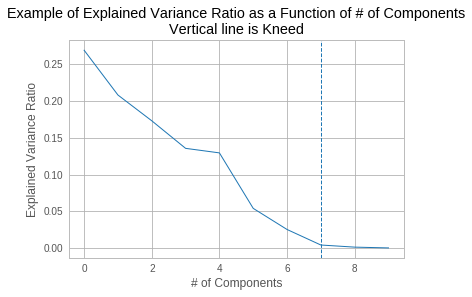

Minimum Description Length
→
Principal Components' Cardinality
Ami Tavory
Facebook Research, Core Data Science
Presenter console active
Outline
- Introduction
- MDL
- MDL Reduction for PCA
- Results
- Conclusions
SVD
(Singular Value Decomposition)

- \(X = X_{n \times m}\)
- \(U\), V unitary
- \(\Sigma = \mathrm{diag}\left(\sigma_1, ..., \sigma_n\right)\) eigenvalue matrix
PCA
(Principal Components Analysis) Approximation


Focus Only on Dimensions


Which \(k\) Should We Choose?

Minimize Reconstruction Error?
(Eckart-Young-Mirsky) For any \(k\)
$$\begin{align}\min_{W, V} \left| X - W_k V_k^T \right|_2^2 = \sum_{i = k + 1}^m\left[ \sigma_i^2\right].\end{align}$$


Find Knee/Elbow?
Utilize Eigenvalue Properties?

Drawbacks
- Not very well established theoretically
- Known to be problematic in some cases
Outline
- Introduction
- MDL
- MDL Reduction for PCA
- Results
- Conclusions
Minimum Description Length Principle
The best hypothesis for a given set of data, is the one that leads to the best compression of the data (Rissanen).
Application to PCA Cardinality


Inherent Tradeoff


How to Find the Description Length?
- Use Information Theory (Shannon) and Complexity Theory (Kolmogorov).
- If we can impose a density \(f(X)\) on an R.V. \(X\), then \(-\log\left(f(X)\right)\) is (effectively) the answer.
- Transformed escription length problem → distribution problem.
- But how should we choose a distribution for a model?
Normalized Maximum Likelihood
- Let \(X\) be distributed according to a model parameterized by \(\Phi\).
- Let \(\hat{\Phi}\left(X\right)\) be the ML (maximum likelihood) estimate of \(\Phi\) for \(X\).
- The NML (normalized maximum likelihood) distribution is$$\begin{align}{f\left( X \;;\; \hat{\Phi}\left(X\right)\right) \over \int f\left( Y \;;\; \hat{\Phi}\left(Y\right)\right) dY }\end{align}$$
- This is the "modern form" of MDL (Shtarkov, Rissanen)
- Prequential (Dawid) optimality properties
Inutitively, \(f\left( X \;;\; \hat{\Phi}\left(X\right)\right)\) an immediate choice, but self-referential, cannot be used for transmission

$$\begin{align}{f\left( X \;;\; \hat{\Phi}\left(X\right)\right) \over \int f\left( Y \;;\; \hat{\Phi}\left(Y\right)\right) dY }\end{align}$$
also has a pleasing bias-variance tradeoff.
PCA as a Generative Model
\(\Phi \equiv k, \Gamma\)
Outline
- Introduction
- MDL
- MDL Reduction for PCA
- Results
- Conclusions